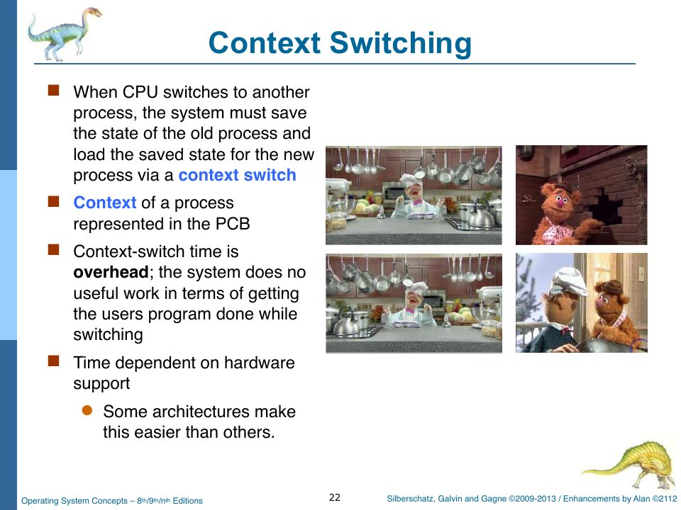

Scheduling in rObSen: Timer, Dispatcher, Context Switch
Slides: Chapter 5, pp. 274–277 and 421–478; Chapter 3, pp. 177 and 186 (context switching). Project Parts Three and Four; Lab 010.
Chapter 12 was theory. This chapter is the machinery: how rObSen actually takes the CPU away from one process and gives it to another. Three pieces cooperate: a timer in the CPU that counts down the quantum, a timer interrupt service routine in the kernel that decides whether to switch, and a dispatcher that performs the switch. Then we’ll check whether the three scheduling policies rObSen offers behave as advertised. (Two of them don’t.)
Piece 1: the timer
At the end of every instruction, Cpu.cycle does this:
if (_CurrentProcess) {
_CurrentProcess.pc = this.PC & 0xff;
_CurrentProcess.acc = this.Acc & 0xff;
_CurrentProcess.xReg = this.Xreg & 0xff;
_CurrentProcess.yReg = this.Yreg & 0xff;
_CurrentProcess.zFlag = this.Zflag & 0xff;
_CurrentProcess.ir = this.IR & 0xff;
}
if (_CurrentProcess && this.isExecuting) {
if (_SchedulerCounter > 0) {
_SchedulerCounter--;
}
if (_SchedulerCounter <= 0) {
_KernelInterruptQueue.enqueue(new Interrupt(TIMER_IRQ, []));
_SchedulerCounter = 0;
}
_CurrentProcess.quantumRemaining = Math.max(_SchedulerCounter, 0);
_CurrentProcess.turnaroundCycles = _CpuCycleCount - _CurrentProcess.arrivalCycle;
}
First the CPU saves its registers into the running PCB. This happens after every instruction, so by the time anyone decides to switch, the outgoing process’s state is already saved. (Compare slide p. 177, where “save state into PCB0” is an explicit step of the switch. rObSen does it eagerly.)
Then it decrements _SchedulerCounter, and when the counter reaches zero, it enqueues a TIMER_IRQ. That’s the hardware timer from slide p. 56: “Set interrupt after specific period. Operating System decrements counter. When counter zero generate an interrupt.” The counter starts at _SchedulerQuantum (6 by default, changeable with q <n>) each time a process is dispatched.
The interrupt isn’t handled immediately. It sits in the interrupt queue until the next clock tick, and since interrupts take priority over CPU cycles (Chapter 6), that next tick handles it before the process can execute a seventh instruction. So the quantum is exactly q instructions, and every context switch lands cleanly between instructions, as the spec requires.
Piece 2: the timer ISR
public krnTimerISR() {
this.enterKernelMode("Timer");
if (!_CPU) {
_SchedulerCounter = _SchedulerQuantum;
this.exitToUserMode();
return;
}
if (!_CurrentProcess) {
const next = this.dequeueNextReadyProcess();
if (next) {
this.krnTrace(`Timer ISR dispatching PID ${next.pid} (no current process).`);
this.dispatchProcess(next);
} else {
_SchedulerCounter = _SchedulerQuantum;
}
this.exitToUserMode();
return;
}
if (!_RunAllMode) {
_SchedulerCounter = _SchedulerQuantum;
this.exitToUserMode();
return;
}
if (!_ReadyQueue || _ReadyQueue.getSize() === 0) {
_SchedulerCounter = _SchedulerQuantum;
this.exitToUserMode();
return;
}
const current = _CurrentProcess;
current.markReady();
current.noteEnqueued();
_ReadyQueue.enqueue(current);
const next = this.dequeueNextReadyProcess();
if (!next || next.pid === current.pid) {
this.dispatchProcess(current);
this.exitToUserMode();
return;
}
this.krnTrace(
`Timer ISR context switch from PID ${current.pid} to PID ${next.pid}.`,
);
Control.hostLog(
`Context switch: PID ${current.pid} -> PID ${next.pid}`,
"scheduler",
);
if (next.location === "Disk" && !this.swapInProcess(next)) {
this.dispatchProcess(current);
this.exitToUserMode();
return;
}
this.dispatchProcess(next);
this.exitToUserMode();
}
The decision tree:
- No CPU? Reset the counter and leave.
- No current process? Dispatch whoever’s next, if anyone.
- Not in
runallmode? Reset the counter and let the current process continue. A process started withrun <pid>runs to completion uninterrupted, by design. - Ready queue empty? Nobody to switch to; reset the counter and let the current process continue.
- Otherwise, preempt: mark the current process ready, put it at the back of the ready queue, and ask the policy (
dequeueNextReadyProcess) who’s next. If the answer is the same process (it was alone after all), just re-dispatch it. Otherwise logContext switch: PID a -> PID b, roll the next process in from disk if it’s been swapped out (Chapter 17), and dispatch it.
Step 5 is the round-robin rule of slide p. 421 exactly: “After this time has elapsed, the process is preempted… and added to the end of the ready queue.”
Piece 3: the dispatcher
private dispatchProcess(pcb: TSOS.PCB): void {
if (pcb.location === "Disk") {
const allocation = _MemoryManager.getFreePartition();
if (!allocation) {
this.krnTrace("No free partition for swap-in.");
return;
}
_MemoryManager.claimPartition(allocation, pcb.pid);
_Swapper.rollIn(pcb, allocation);
pcb.base = allocation.base;
pcb.limit = allocation.limit;
pcb.segment = allocation.partition;
}
pcb.markRunning();
_ReadyQueue?.remove((queued: TSOS.PCB) => queued.pid === pcb.pid);
if (_CPU) {
_CPU.PC = pcb.pc;
_CPU.Acc = pcb.acc;
_CPU.Xreg = pcb.xReg;
_CPU.Yreg = pcb.yReg;
_CPU.Zflag = pcb.zFlag;
_CPU.isExecuting = true;
}
pcb.quantumRemaining = _SchedulerQuantum;
_CurrentProcess = pcb;
_SchedulerCounter = _SchedulerQuantum;
this.krnTrace(`Dispatching PID ${pcb.pid} with quantum ${_SchedulerQuantum}`);
Control.hostUpdateDisplays();
this.exitToUserMode();
}
“Dispatcher module gives control of the CPU to the process selected by the short-term scheduler… switching context, switching to user mode, jumping to the proper location in the user program to restart that program” (slide p. 277). Line for line:
- If the process is on disk, find it a partition and roll it in. (This path is used by
resumeRunAllIfPossible; the timer ISR rolls processes in itself, first.) markRunning(): update its state and its waiting-time accounting.- Remove it from the ready queue.
- Switch context: copy its saved
pc,acc,xReg,yReg,zFlaginto the CPU, and setisExecuting. Because the PC is logical (Chapter 4), the process resumes exactly where it left off, in whichever partition it now occupies. - Make it
_CurrentProcess, which also tells the memory accessor whose base to add. - Reset the timer to a full quantum.
- Switch to user mode.
That’s a complete context switch in about fifteen lines. The overhead is real, though invisible in the cycle counts: each switch costs one clock tick spent handling the timer interrupt instead of executing an instruction.

Policy: choosing the next process
private dequeueNextReadyProcess(): TSOS.PCB | null {
if (!_ReadyQueue) {
return null;
}
const queueArray = _ReadyQueue.toArray() as TSOS.PCB[];
if (queueArray.length === 0) {
return null;
}
let selected: TSOS.PCB | null = null;
switch (_SchedulerMode) {
case "FCFS":
selected = queueArray[0];
break;
case "PRIORITY":
selected = queueArray.reduce((best, pcb) => {
if (!best || (pcb.priority ?? 0) < (best.priority ?? 0)) {
return pcb;
}
return best;
}, null as TSOS.PCB | null);
break;
default:
selected = queueArray[0];
break;
}
_ReadyQueue.remove((pcb: TSOS.PCB) => pcb.pid === selected.pid);
if (selected.state === "Terminated") {
return this.dequeueNextReadyProcess();
}
return selected;
}
For RR and FCFS it takes the front of the queue. For PRIORITY it uses reduce to find the PCB with the smallest priority number; because the comparison is strict (<), the earliest-queued process wins ties, which is the FCFS tie-break the slides use. It skips (and discards) any terminated process it finds.
The setschedule command changes _SchedulerMode, and getschedule displays it.
Running everything: runall, kill, killall
public krnRunAll(): { success: boolean; message?: string } {
if (!_ReadyQueue) {
return { success: false, message: "Ready queue is unavailable." };
}
const readyItems = _ReadyQueue.toArray() as TSOS.PCB[];
const next = readyItems.find((pcb) => pcb.state !== "Terminated");
if (!next) {
return { success: false, message: "No ready processes to run." };
}
this.enterKernelMode("Run All");
// If the first process is on disk, swap it in before dispatching
if (next.location === "Disk") {
if (!this.swapInProcess(next)) {
return { success: false, message: "Failed to swap in first process." };
}
}
this.dispatchProcess(next);
return { success: true };
}
public shellRunAll(args: string[]): void {
if (_CPU && _CPU.isExecuting) {
_StdOut.putText("Error: the CPU is already executing a process.");
return;
}
const runResult = _Kernel.krnRunAll();
if (!runResult.success) {
_StdOut.putText(runResult.message);
return;
}
_RunAllMode = true;
_StdOut.putText("Running all resident processes.");
Control.hostUpdateDisplays();
}
runall dispatches the first non-terminated process in the ready queue (rolling it in first if necessary) and sets _RunAllMode, which is what licenses the timer ISR to preempt. When a process finishes, krnCompleteCurrentProcess (Chapter 9) calls krnRunAll again to start the next one, and when the queue is empty, it clears _RunAllMode and prints a prompt.
kill <pid> terminates one process; if it was the running one, resumeRunAllIfPossible dispatches the next so the batch continues. killall terminates everything and leaves run-all mode. The spec’s warning that killing a running process “should not create a zombie” is satisfied because terminateProcess removes the PCB from the process table (Chapter 9).
Accounting: turnaround and wait
Project Part Three says: “Track and display turnaround time and wait time (measured in cpu cycles) for each process.” The PCB’s state-change methods (Chapter 9) maintain them, and two places display them: the Process Metrics panel (for the current process) and ps:
PID 0 :: state=Ready :: location=Mem 0 :: queue=1 :: segment=0 :: priority=0 :: base=0x0000 limit=0x00ff :: quantum=6 :: turnaround=18 :: wait=12
PID 1 :: state=Ready :: location=Mem 1 :: queue=2 :: segment=1 :: priority=0 :: base=0x0100 limit=0x01ff :: quantum=6 :: turnaround=18 :: wait=12
PID 2 :: state=Running :: location=Mem 2 :: queue=RUN :: segment=2 :: priority=0 :: base=0x0200 limit=0x02ff :: quantum=0 :: turnaround=18 :: wait=12
That’s a real capture, 20 ticks into a runall of three copies of a 12-instruction program (eleven EA NOPs and a 00). Each process has run one quantum of 6; PID 2’s quantum has just hit 0, so a timer interrupt is pending.
For a ready process, the displayed wait includes the time it has been waiting so far (waitCycles + (now − lastStateChangeCycle)), so you can watch it grow live.
opBreak, the kernel completes PID 0 and immediately dispatches PID 1, which sets the counter to 6 and makes PID 1 the current process. Then control returns to the tail of Cpu.cycle, which still has bookkeeping to do for "the process that just executed," and finds _CurrentProcess pointing at PID 1. So PID 1's PCB gets PID 0's IR (00), and PID 1's brand-new quantum is decremented to 5. PID 1 runs 5 instructions, is preempted one short of its BRK, and has to wait for PID 2's whole quantum. The fix is to remember who was running at the top of cycle (const pcb = _CurrentProcess;) and do the tail's bookkeeping only if _CurrentProcess === pcb afterwards.
Do the policies do what they say?
Here is where reading the code pays off. Run three copies of a long program under setschedule fcfs and watch the host log. I did, by running rObSen’s compiled JavaScript in Node.js:
Context switch: PID 2 -> PID 3 | Context switch: PID 3 -> PID 4 | Context switch: PID 4 -> PID 2 | …
load takes no priority argument and the PCB constructor's priority parameter defaults to 0. With all priorities equal, the reduce always returns the front of the queue, so PRIORITY behaves like FCFS, which (above) behaves like RR. The spec also asks for non-preemptive priority, which runs into the same timer-ISR problem as FCFS. And after a process completes, krnRunAll picks the next process with readyItems.find(…), the front of the queue, without consulting the policy at all.
The fix is small and instructive, because it moves the “should I preempt?” decision into the policy where it belongs:
// shell.ts, in shellLoad: accept an optional priority, e.g. "load 3"
const priority = args.length > 0 ? parseInt(args[0], 10) : 0;
// … later:
const pcb = new PCB(pid, allocation.base, allocation.limit, allocation.size, allocation.partition,
Number.isNaN(priority) ? 0 : priority);
// kernel.ts, in krnTimerISR, right after the !_RunAllMode check:
if (_SchedulerMode !== "RR") {
// FCFS and non-preemptive priority never take the CPU away;
// the next decision happens when the current process finishes.
_SchedulerCounter = _SchedulerQuantum;
this.exitToUserMode();
return;
}
// kernel.ts, in krnRunAll: let the policy choose, instead of the queue's front
const next = this.dequeueNextReadyProcess();
(The last change also requires krnRunAll to cope with dequeueNextReadyProcess removing the process from the queue, which dispatchProcess already tolerates.) With those three edits, setschedule fcfs produces no context switches until each process finishes, and load 0 / load 2 let you watch priority reorder the batch.
Check yourself
- With the default quantum, how many clock ticks does it take for three processes of 12 instructions each to finish under RR, counting the ticks spent on timer interrupts?
- What does
q 1do to throughput? Why? - Why is it safe for the timer ISR to modify
_ReadyQueuewithout any lock?
Answers
- Measured: 40 ticks, of which 36 are instructions and 4 are timer interrupts (after PID 0’s, PID 1’s, and PID 2’s first quanta, and after PID 1’s shortened second quantum; see the bug callout above). Without that bug it would be 39: three interrupts, one after each first quantum, because each process’s BRK then ends its second quantum before the timer fires.
- It roughly halves throughput in wall-clock terms: every instruction is followed by a timer interrupt, and each interrupt costs a full tick. The cycle counts (turnaround, wait) look fine, because they only count instructions; the overhead is hidden from them. That’s the slide’s warning that the quantum “must be large with respect to context switch, otherwise overhead is too high.”
- Because nothing else can run while it does. JavaScript runs one callback at a time to completion (Chapter 10a), so the shell, the keyboard ISR, and the timer ISR can never interleave. On a real multiprocessor kernel, the ready queue would need a lock (Chapter 19).